Servo Controlled Programmable Light Switch
Summary:
I began noticing problems with the low demand for automated light switches. After doing some research, I came to the conclusion that the two biggest deterrents that turn off the everyday consumer are high pricing and difficult installation. I took these two problems and combined them to create a solution that addresses both concerns. I have created a product anybody can install along while maintaining a low price point . As you can see from the pictures below, I wanted to understand the reason why most of these products had such a high cost. I was able to engineer an automated light switch that will cut down the price and and increase ease of use by utilizing a mobile device.
 Execution:
I saw that a lot of automated light switch products were using zigbee which did have a higher cost because they run through a higher frequency at 2.4 GHz. Most of these devices run through this network. So you could even potentially shut them off when you are away from the house. However, this would only be possible through their central hubs which would be an additional purchase.
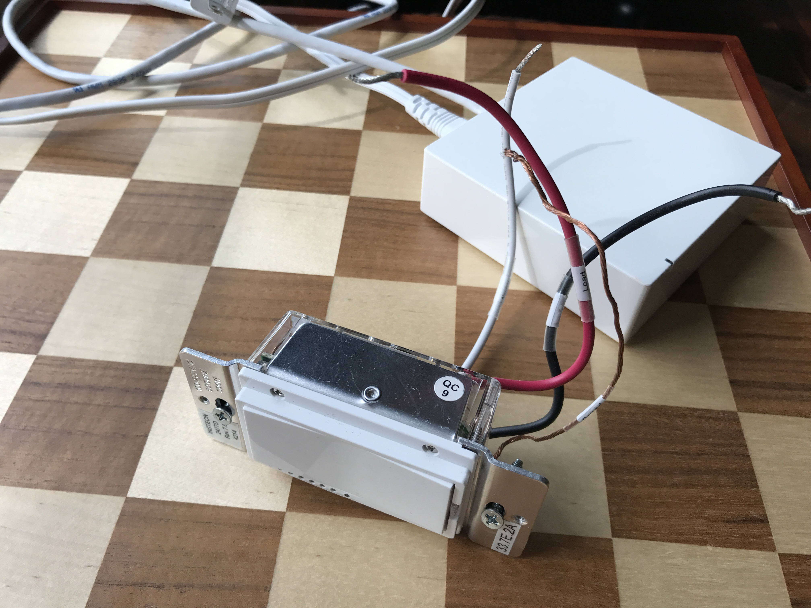
My simpler alternative would be to download an iOS application that would be in contact with your central hub that is plugged into your network. That hub would then send a frequency to the house device to be controlled. After learning how everything came together to contact each other, I started conducting my own experiments using a raspberry pi. The most popular item on the market right now are light switches, so I wanted to start there. Since zigbee seemed to be the the most efficient product on the market for a good price I wanted to go with this model. I wanted to focus on creating an economically conscious switch first, then work on making the installation less of a hassle. So, a switch with zigbee with a small servo motor in it would work. After experimenting with the switch, I began brainstorming ideas for a central hub that was cheap to come by and not over 60$ in price unlike most hubs on the market. I have had experience in working with raspberry pies before, and thought this product would be perfect. You could 3D print a nice looking case and make it look very similar to other central hubs on the market.
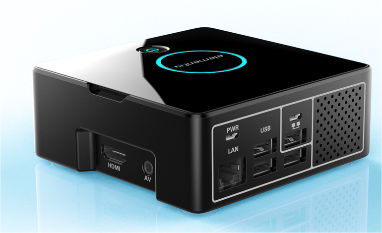
The raspberry pi would only be need to be connected to power and could be either connected to the network through a wireless connection, or through an ethernet port. As I began deciding which connection time would be more appropriate, I took a step back and reorganized my thoughts and end goal. I wanted to engineer an accessible and cost efficient device. After doing some calculations and more research into the parts I was using, I realized that the hub is the main reason why other products on the market are so expensive. I did some back tracking and realized using a hub would just not be logical for the goals I wanted to obtain. I began to research more ways of connecting these devices to the actual user. I began to notice how installing a bluetooth chip on the circuit board was a lot less expensive than using a wifi module, which ruled out using a wifi module. I then wanted to solely use bluetooth for the switch since it would cut down the price and eliminate the need for a hub. Hypothetically, I would have to use a button on the circuit board to rotate the motor in different directions until a more suitable design was set in place. It would be able to talk to the device directly through the network. Of course the problem with this was that if you are at work or away you wouldn’t be able to remote into the switch. I thought that the trade off would be worth it.
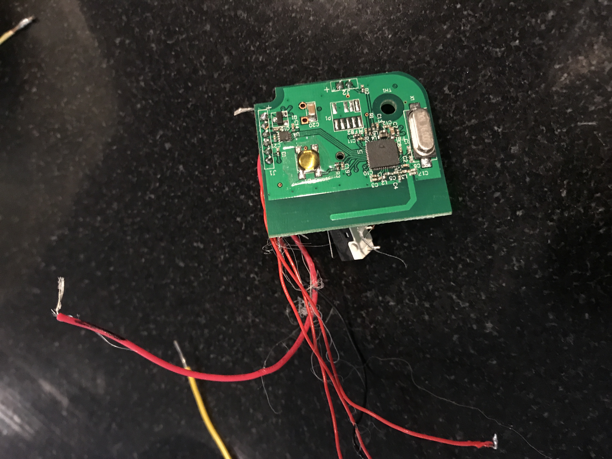
After finding the parts I needed, I began to focus on building out the actual light switch frame. This involved a lot of problem solving since I needed a way to fit all the necessary components inside while maintaining the ease of use. I began testing various small motors to see which would be the most efficient to flip the switch on and off. At first, using an electromagnetic linear motor was the best option. Although, after experimenting with this type of motor, I came to realize that most micro servo motors are very large in size and very costly and would not have the power to flip the switch.
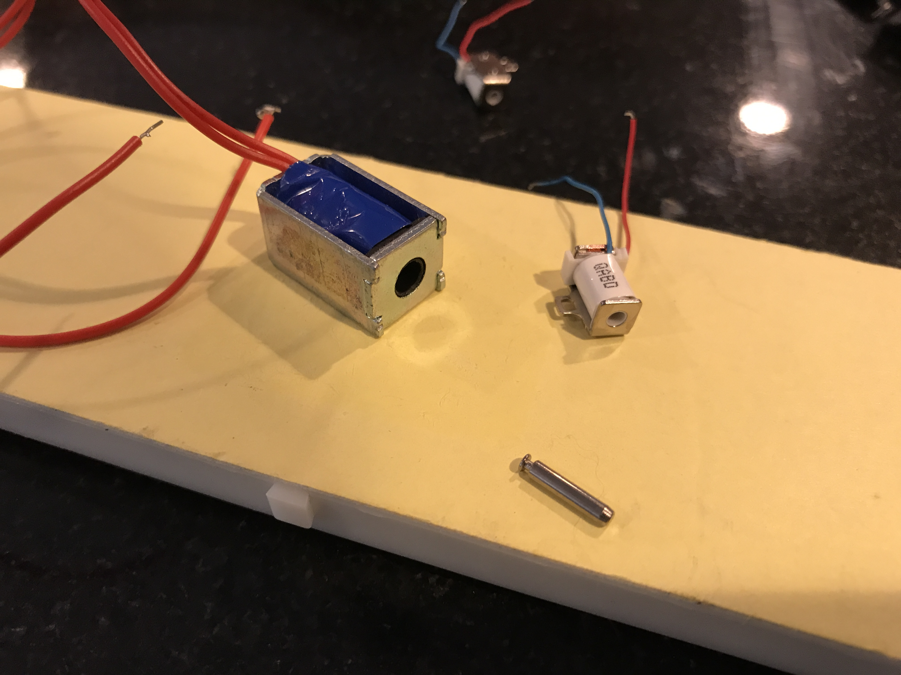
I had a very strong feeling that using a small servo motor with a gear box would be the way to go. The gear box at the end of the servo motor would allow enough torque to push the switch up and down in a small amount of space. They are also very cost efficient. This would then be attached to the small circuit board with the bluetooth chip controlling the motor. The next step was getting power to the motor. I couldn’t just attach it to the power in the wall since that would make it a rough setup for the user. After designing multiple circuits such as a series and a parallel, using disposable batteries would be the best route.
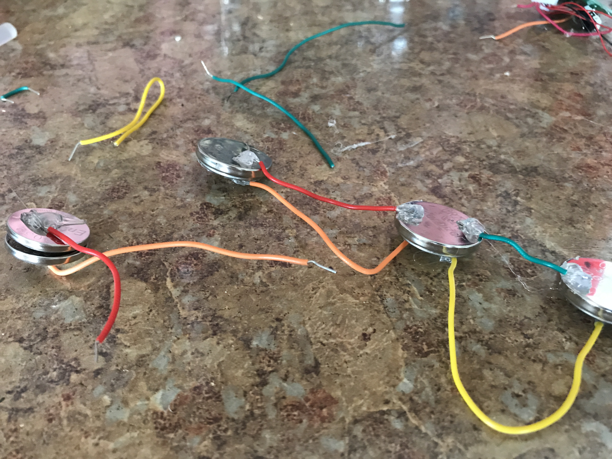
Now that most of the concept design was done, the next step was to find out how everything would come together. The final decision I came to after multiple tests were conducted was to make a light switch frame. This way the user could have an interchange automated light switch.
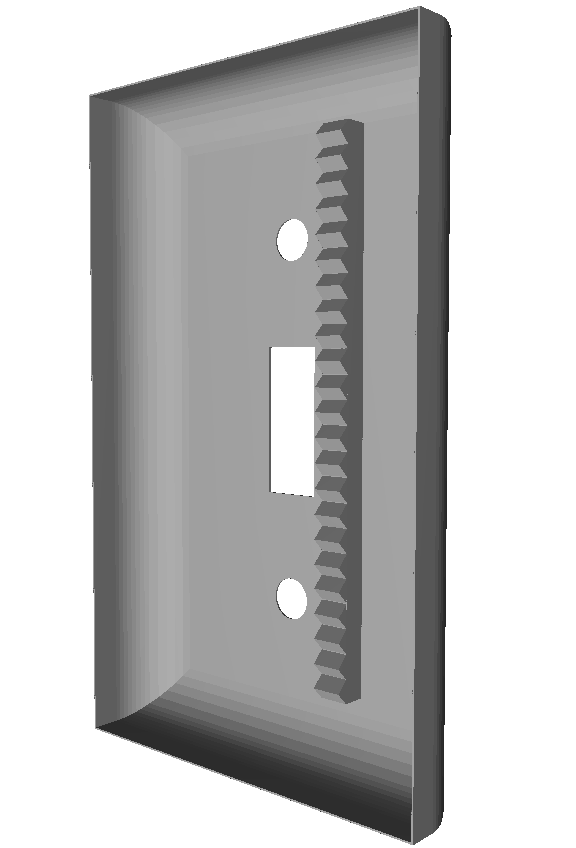
Execution:
I saw that a lot of automated light switch products were using zigbee which did have a higher cost because they run through a higher frequency at 2.4 GHz. Most of these devices run through this network. So you could even potentially shut them off when you are away from the house. However, this would only be possible through their central hubs which would be an additional purchase.
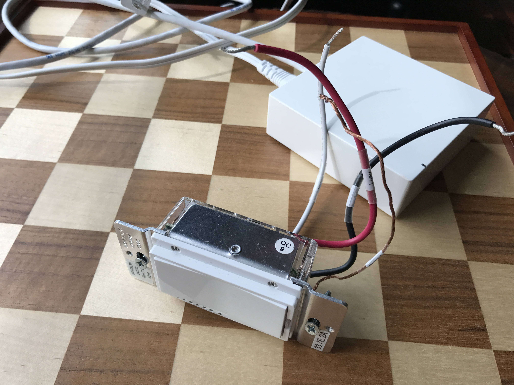
My simpler alternative would be to download an iOS application that would be in contact with your central hub that is plugged into your network. That hub would then send a frequency to the house device to be controlled. After learning how everything came together to contact each other, I started conducting my own experiments using a raspberry pi. The most popular item on the market right now are light switches, so I wanted to start there. Since zigbee seemed to be the the most efficient product on the market for a good price I wanted to go with this model. I wanted to focus on creating an economically conscious switch first, then work on making the installation less of a hassle. So, a switch with zigbee with a small servo motor in it would work. After experimenting with the switch, I began brainstorming ideas for a central hub that was cheap to come by and not over 60$ in price unlike most hubs on the market. I have had experience in working with raspberry pies before, and thought this product would be perfect. You could 3D print a nice looking case and make it look very similar to other central hubs on the market.
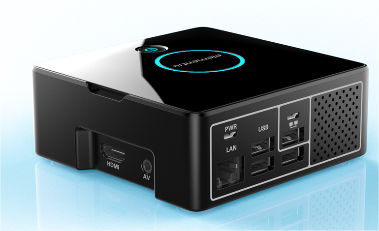
The raspberry pi would only be need to be connected to power and could be either connected to the network through a wireless connection, or through an ethernet port. As I began deciding which connection time would be more appropriate, I took a step back and reorganized my thoughts and end goal. I wanted to engineer an accessible and cost efficient device. After doing some calculations and more research into the parts I was using, I realized that the hub is the main reason why other products on the market are so expensive. I did some back tracking and realized using a hub would just not be logical for the goals I wanted to obtain. I began to research more ways of connecting these devices to the actual user. I began to notice how installing a bluetooth chip on the circuit board was a lot less expensive than using a wifi module, which ruled out using a wifi module. I then wanted to solely use bluetooth for the switch since it would cut down the price and eliminate the need for a hub. Hypothetically, I would have to use a button on the circuit board to rotate the motor in different directions until a more suitable design was set in place. It would be able to talk to the device directly through the network. Of course the problem with this was that if you are at work or away you wouldn’t be able to remote into the switch. I thought that the trade off would be worth it.
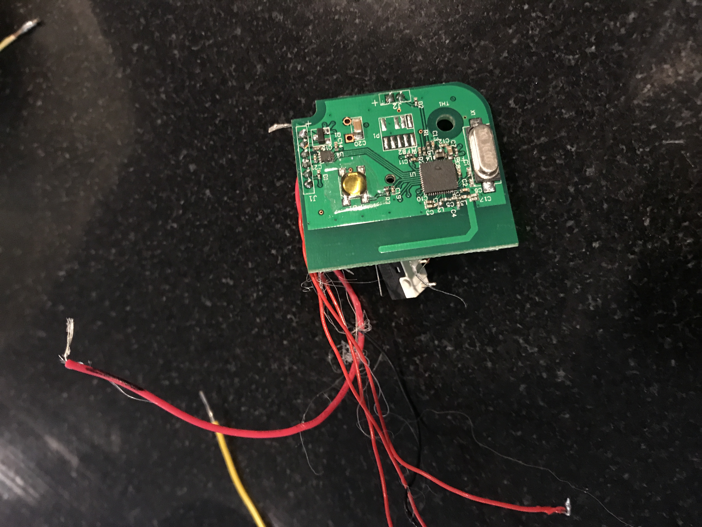
After finding the parts I needed, I began to focus on building out the actual light switch frame. This involved a lot of problem solving since I needed a way to fit all the necessary components inside while maintaining the ease of use. I began testing various small motors to see which would be the most efficient to flip the switch on and off. At first, using an electromagnetic linear motor was the best option. Although, after experimenting with this type of motor, I came to realize that most micro servo motors are very large in size and very costly and would not have the power to flip the switch.
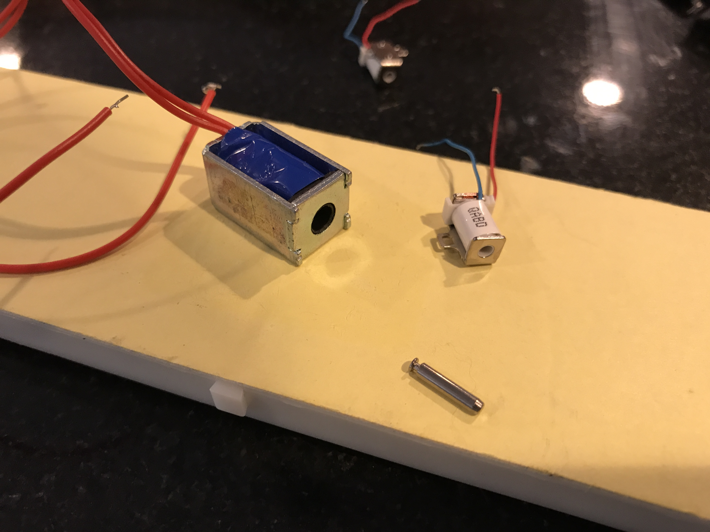
I had a very strong feeling that using a small servo motor with a gear box would be the way to go. The gear box at the end of the servo motor would allow enough torque to push the switch up and down in a small amount of space. They are also very cost efficient. This would then be attached to the small circuit board with the bluetooth chip controlling the motor. The next step was getting power to the motor. I couldn’t just attach it to the power in the wall since that would make it a rough setup for the user. After designing multiple circuits such as a series and a parallel, using disposable batteries would be the best route.
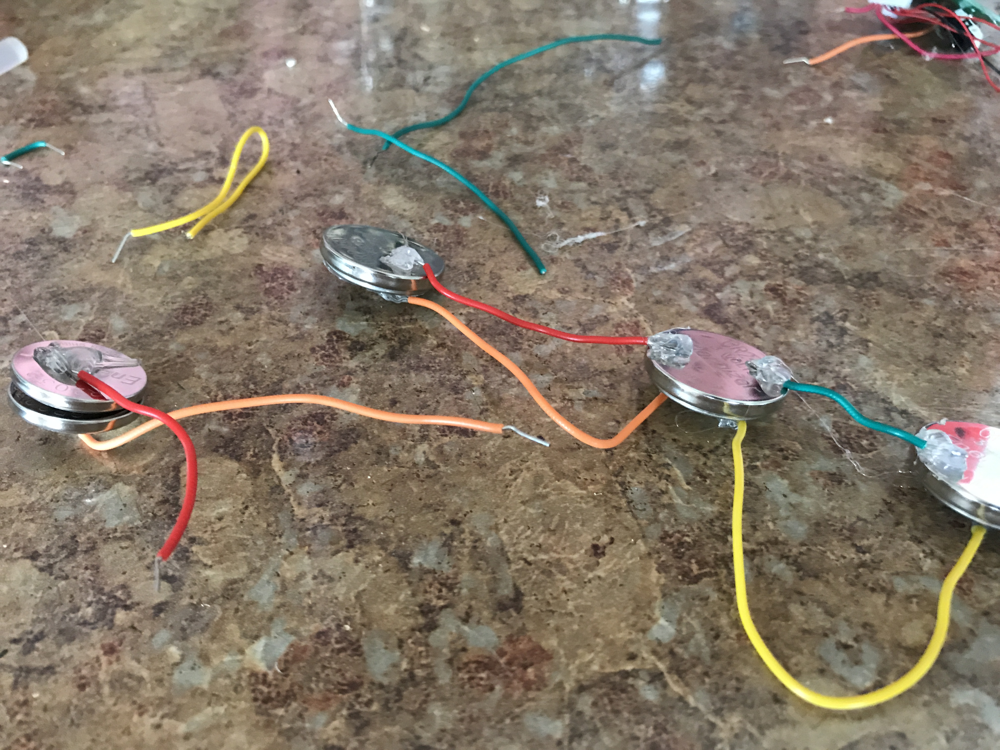
Now that most of the concept design was done, the next step was to find out how everything would come together. The final decision I came to after multiple tests were conducted was to make a light switch frame. This way the user could have an interchange automated light switch.
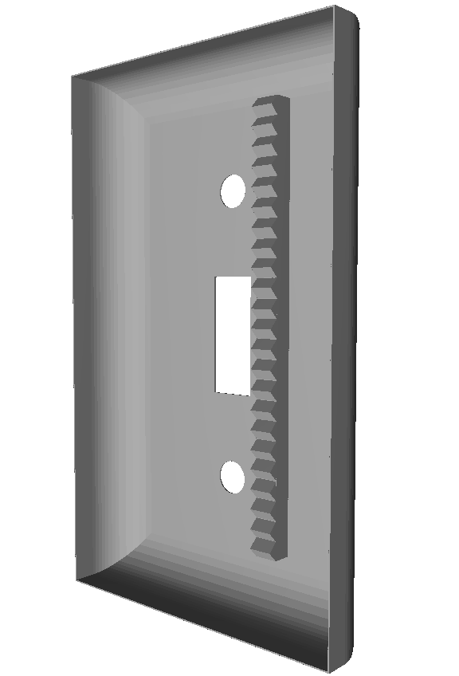
 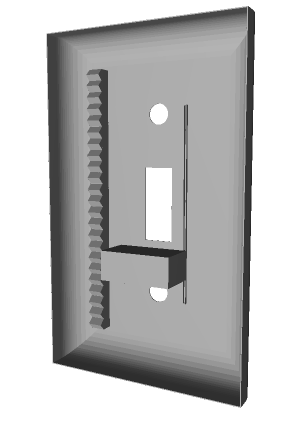
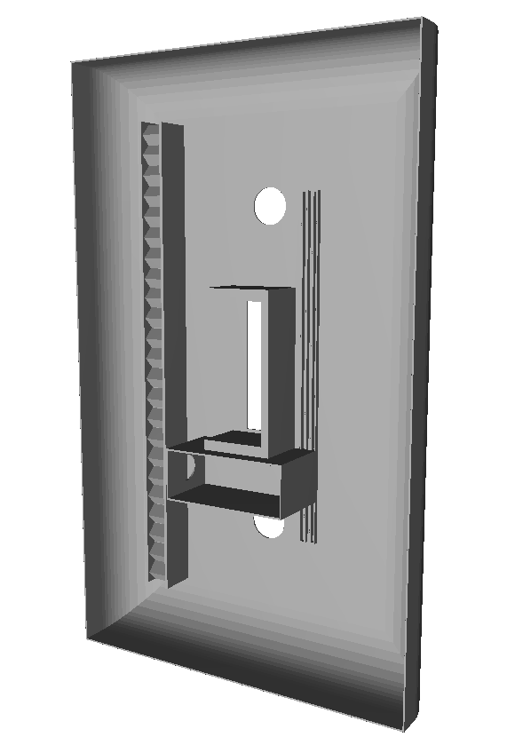
The only task the user would have is to unscrew the small frame on their light switch now and install this one. The batteries would require a removable compartment on the bottom that is not easily noticeable but still easy to access. The next step I took was to figure how how everything would fit and come together. Using Solidworks, I began developing tons of CAD designs to see how everything would look. I did run into the problem of the frame becoming very thick and nobody would want a thick piece of plastic hanging out of the wall.
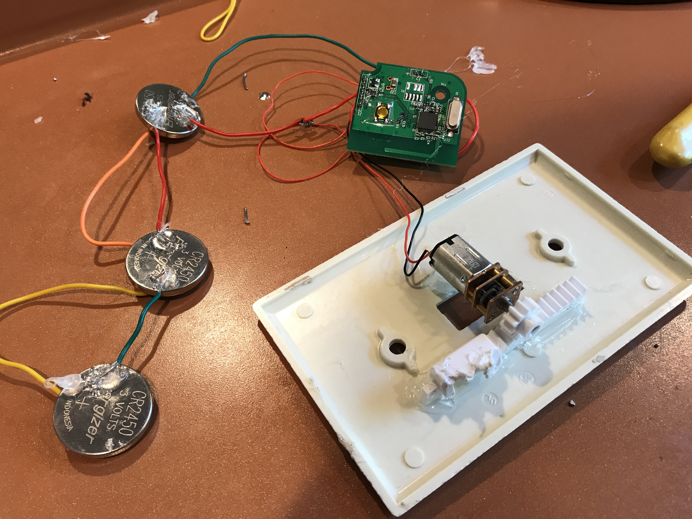
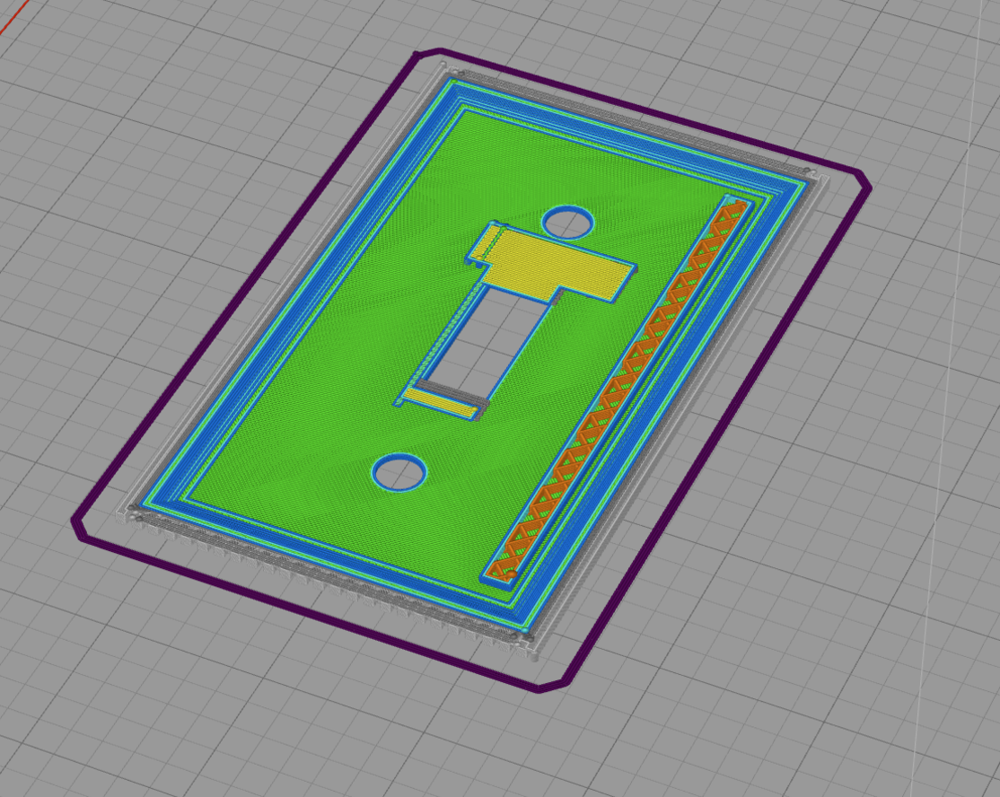
After going through more designs and testing, I was able to creating a mechanism that has the motor hooked up onto tracks with teeth at the end of the motor but also on a track. It would be able to move up and down by power produced by small CR2032 batteries in a small compartment. The motor would then lie in a small container that has a figure eight design to hold the motor but also outline the switch itself to pull and push on it.
I was able to push the depth of the frame down by having multiple tracks had the motor in a horizontal view and using coin batteries to power the device.
Utilizes: Microcontrollers, Android Development, Solid Works (CAD), Circuit Design, Serial Protocol, Linear Servo
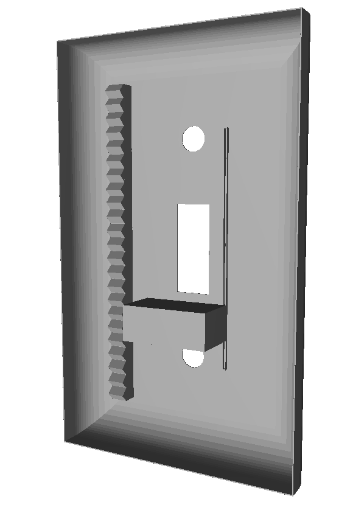
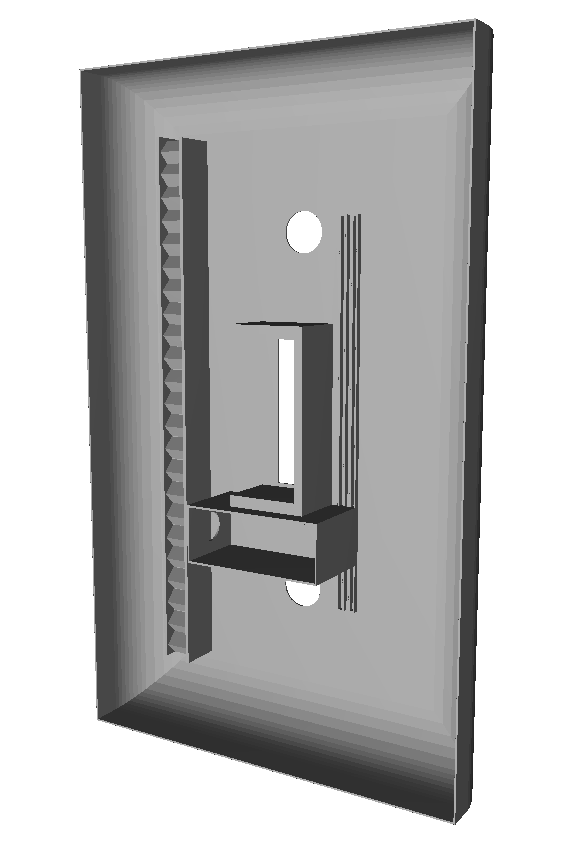
The only task the user would have is to unscrew the small frame on their light switch now and install this one. The batteries would require a removable compartment on the bottom that is not easily noticeable but still easy to access. The next step I took was to figure how how everything would fit and come together. Using Solidworks, I began developing tons of CAD designs to see how everything would look. I did run into the problem of the frame becoming very thick and nobody would want a thick piece of plastic hanging out of the wall.
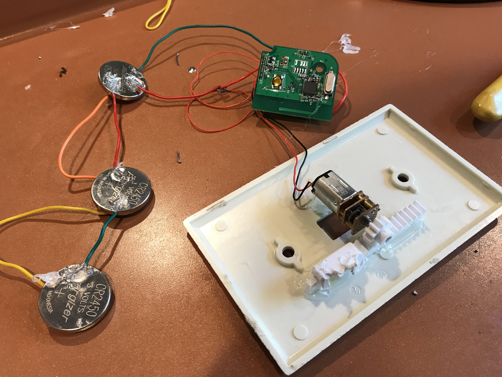
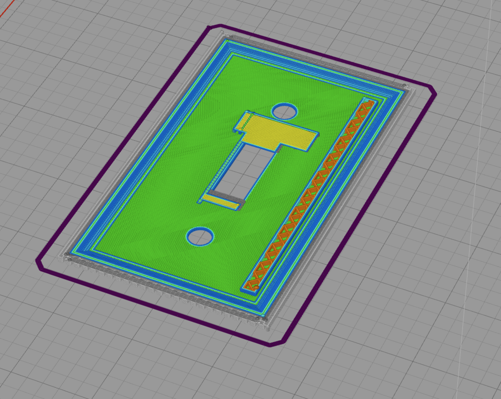
After going through more designs and testing, I was able to creating a mechanism that has the motor hooked up onto tracks with teeth at the end of the motor but also on a track. It would be able to move up and down by power produced by small CR2032 batteries in a small compartment. The motor would then lie in a small container that has a figure eight design to hold the motor but also outline the switch itself to pull and push on it.
I was able to push the depth of the frame down by having multiple tracks had the motor in a horizontal view and using coin batteries to power the device.
Utilizes: Microcontrollers, Android Development, Solid Works (CAD), Circuit Design, Serial Protocol, Linear Servo